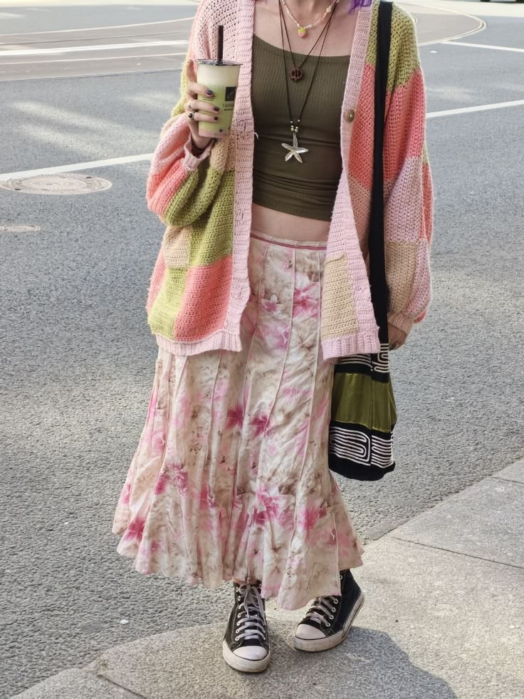
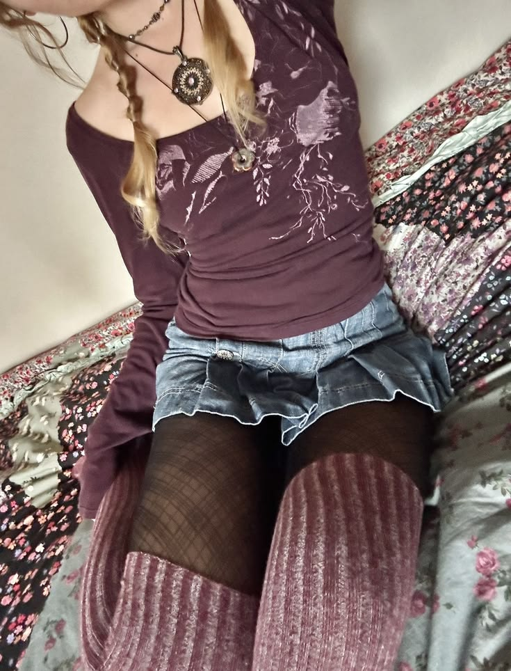

Hafta sonu brunch için
10:05 · 4 oy
🏆 Günün kazananı
Yorumlar
- gece: renkler cok iyi olmus
- cevat: bugunun kazananı belli
- sude: @cevat diyosunn

Hafta sonu brunch için
10:05 · 4 oy
🏆 Günün kazananı

Mor
08:50 · 1 oy
Henüz yorum yok.